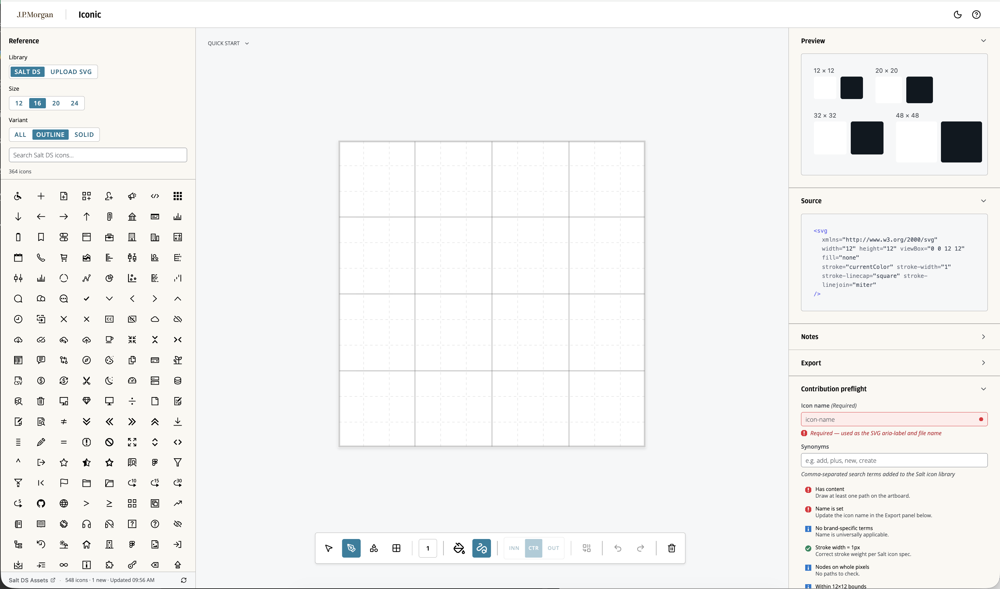
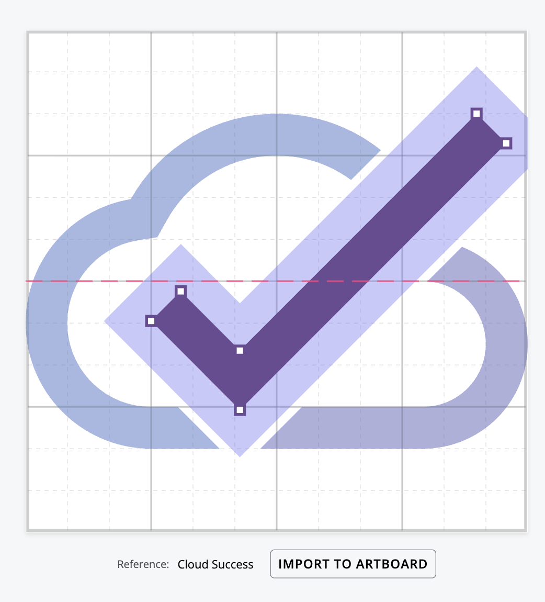
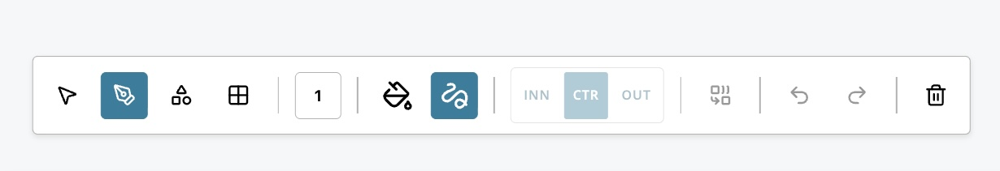
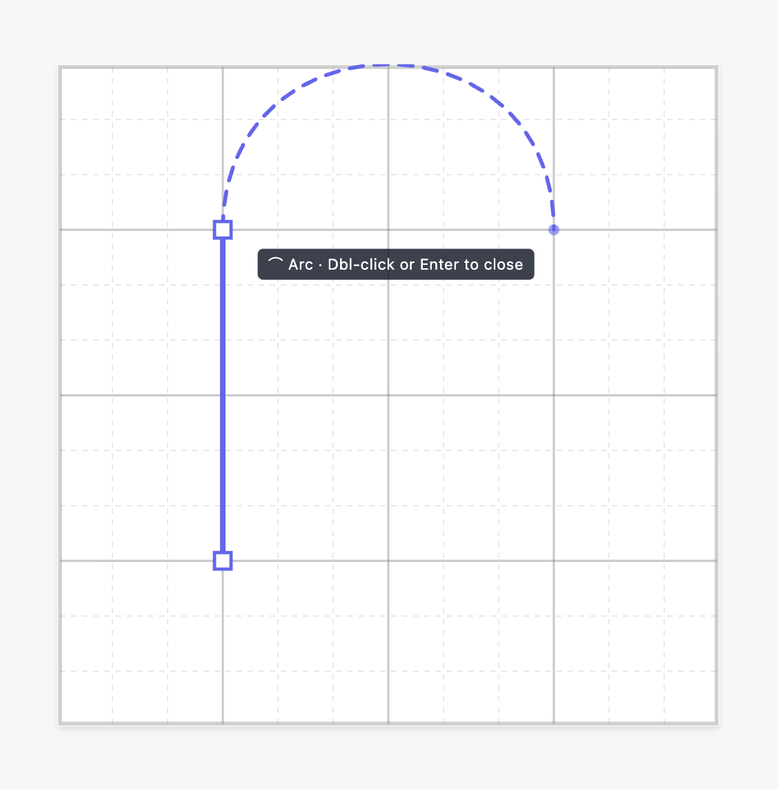
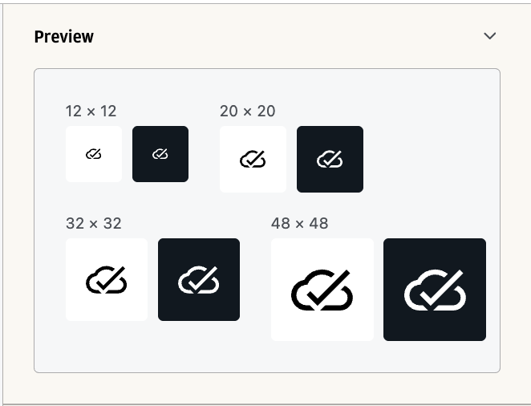
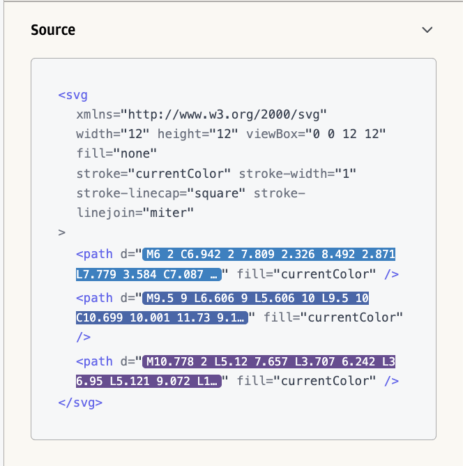
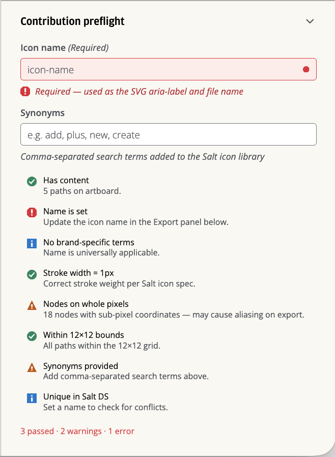

Iconic
An internal web app for icon creation with custom built tools.

Context
Before Iconic, a new Salt DS icon meant bouncing between a reference file, a drawing tool with no enforced grid, and a separate compliance checklist — then hoping the result actually matched spec. Stroke widths drifted off the 1px standard, nodes landed on sub-pixel coordinates that caused aliasing on export, and naming didn't get checked against what the library already had until review.
None of that showed up until someone looked closely. A single icon — draw, check, fix, re-check — could take up to two days once the rework was counted in.
My Role
I designed and built Iconic solo, end to end — the interaction model, the vector drawing engine, and the compliance rules baked into it. It's a simple app, designed for designers, by a designer: every tool in it exists because I hit the same wall myself drawing icons by hand.
Overview
Iconic is built around three panels. Reference on the left searches the Salt DS library or takes an uploaded SVG. The artboard in the center is a snapping canvas locked to Salt's 12×12 grid. And on the right, Preview, Source, and Contribution preflight update live as you draw — so an icon is checked continuously, not just at the end.
Reference & Import
Every icon starts from somewhere. The reference panel searches the Salt DS library — 364 icons across four sizes and outline or solid variants — or takes an uploaded SVG. Selecting a reference doesn't just show it for comparison: it converts the icon into an editable overlay of vector points, positioned directly on the canvas grid, so an existing shape can be traced instead of starting from a blank artboard.

Import to Artboard drops that traced result straight onto the working canvas, fully editable and already snapped to grid — the fastest path from an existing icon to a new variant.
Drawing Tools & Line Arc
Underneath, Iconic carries the standard vector kit — pen, shapes, pixel mode, fill and stroke, and boolean operations to combine or subtract shapes.

The one built specifically for how Salt DS icons get drawn is Line Arc: hold shift while drawing with the pen tool, and the next segment converts from a straight line into an arc. A rounded corner or a curve happens mid-stroke, without stopping to set a corner radius or reach for a separate arc tool.

Live Feedback & Compliance
The right panel is where a drawn shape becomes a shippable icon — three tools that update live as you draw, so problems surface while you're still working instead of at review.
Preview renders the icon at every size Salt DS ships — 12×12, 20×20, 32×32, and 48×48 — in both light and dark, so a stroke that reads fine at 48px but disappears at 12px is obvious immediately.

Source shows the exact SVG markup as it's drawn — width, viewBox, stroke conventions, and every path — so what engineering receives is the same markup the canvas produced, not a re-export.

Contribution preflight is the compliance layer: automated checks covering content, naming — used as the SVG's aria-label and file name — brand neutrality, stroke width, whole-pixel node placement, the 12×12 bounds, search synonyms for the icon library, and uniqueness within Salt DS. Each resolves to pass, warning, or error, with a running count at the bottom. Nothing ships until preflight is clean.

Outcome
- Icon creation time down from up to 2 days to about 2 hours
- Salt DS grid, stroke, and naming conventions enforced automatically, before export
- One tool for trace, draw, preview, and export — no round-trips through separate apps
- Finished SVG markup handed to engineering directly from the Source panel
- Designed and built solo, for designers, by a designer
A simple app, designed for designers, by a designer — every tool in it exists because I hit the same wall myself drawing icons by hand.